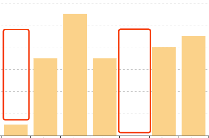
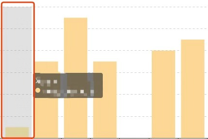

开发过程中，我们经常会碰到这样的需求：在柱状图上，点击某条柱形，调用相应的方法或跳转相应的界面
接下来就详细介绍如何实现柱状图的点击事件，其中maChart是绘图对象
一、简单的点击事件
myChart.on('click', function (params) {
console.log(params)
})这样就可以获得每条柱形所对应的数据
若需要在每条柱形上添加额外的属性，比如id等等，可以在series中，通过对象去定义，其中value是柱形的值
seriesData: [{value: 1, id:'...'}, {value: 2, id:'...'}, ......]这个id同样可以在上面的点击事件的params中获取到
注意：此方法虽实现了点击，但是只限于点击柱形中有数据的部分，而对于没有数据的区域，点击无效，如下图

若要实现点击整条柱形区域都有效，如下图，请看第二个方法

二、整条柱形的点击事件
myChart.getZr().on('click', params => {
let pointInPixel = [params.offsetX, params.offsetY]
if (myChart.containPixel('grid', pointInPixel)) {
let xIndex = myChart.convertFromPixel({ seriesIndex: 0 }, [params.offsetX, params.offsetY])[0]
console.log(xIndex)
}
})其中，getZr()方法可以监听到整个画布的点击事件，zIndex是被点击的柱形的index
若要实现获取id的效果，则需要拿到series的数组，再通过index拿到对应的数据对象